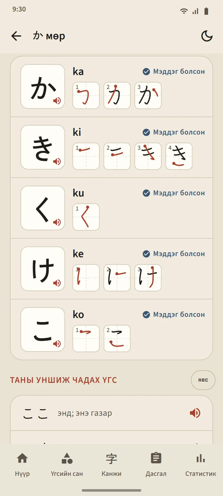
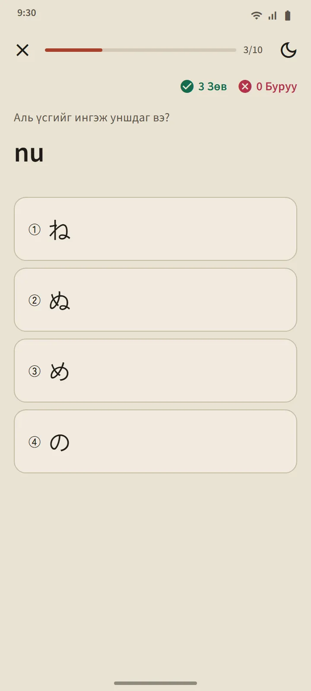

Хичээлийн жагсаалт болдог хүснэгт
Хирагана ба Катакана хуудсууд Нүүр дэлгэцийн «Япон хэлний үндэс» хэсгээс нээгдэнэ. Дээд талын хураангуй карт таны мэддэг тэмдэгтийг тоолно; доорх хүснэгт гурван бүлэгтэй: Үндсэн (46 тэмдэгт), Тэмдэгтэй (дакутэн ба хандакутэн), Нийлмэл (きゃ, しゅ, ちょ гэх мэт). Будагдсан нүд нь Мэддэг болсон, хүрээтэй нүд нь явц дунд гэсэн үг.
Мөр бүрт нэг хичээл
Хүснэгтийн мөр бүр нэг хичээл: дарж сонсдог тэмдэгтийн нүднүүд, ромажи, мэддэг гэсэн тэмдэг, тэмдэгт бүрийн зураасны дараалал, мөн «Таны уншиж чадах үгс»: тухайн мөр хүртэл сурсан тэмдэгтүүдээс л бүтсэн жинхэнэ толийн үгс, ромажийг товчны ард нууж, эхлээд өөрөө уншиж үзэхээр. «Энэ мөрийн асуулга» товч хичээлийг төгсгөнө.

Унших дүрэм
Хүснэгт бүрийн сүүлийн бүлэг эхлэгчид бүдэрдэг дүрмийг тайлбарлана: хираганад жижиг っ ба урт эгшиг; катаканад урт тэмдэг ー, жижиг ッ, гаднаас орсон үгийн нийлэмж (ファ, ティ, ウィ). Дүрэм бүрт уншиж болох жишээ үгс бий.
Арван асуулттай асуулга, дахин товлолтгүй
Канагийн асуулга гурван төрлийн асуулттай: тэмдэгтээс ромажи, ромажиас тэмдэгт, дуунаас тэмдэгт. Тэмдэгт гурван удаа дараалан зөв хариулсны дараа Мэддэг болсон болж, алдвал Сурч байгаа шат руу буцна. Үг ба канжиас ялгаатай нь тэмдэгтүүдийг дахин товлодоггүй: бүгдийг нь уншиж чаддаг болмогц хүснэгт дуусна. Асуулгын хураангуй таны оноо, шинээр мэддэг болсон болон алдсан тэмдэгтүүдийг харуулна.

Эндээс эхлээрэй
Аппыг анх нээхэд та тэгээс эхэлж байна уу, эсвэл хирагана уншиж чадах уу гэж асууна. Эхлэгчдэд Нүүр дэлгэц дээр эхний алхмаар «Хираганатай танилцах», дараа нь эхний 20 үг, эхний хэл зүйн хичээл, эхний канжи, эхний сорил шалгалт гарна.